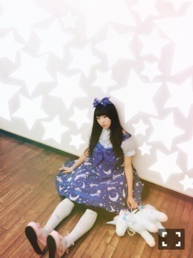

| 2016/02 14 Sun | 13疾走目。696回目 |
ハッピーバレンタイン
スコーン配りました。
さぬき映画祭始まりました！
2月21日「アニバーサリー」をぜひ！
そんな21日はらじらー！生放送出演します。
早速！うれしいです。
日芽香ありがとう＼(^o^)／
そして、
ただいま開催中の羽田宇宙支店。
伊勢丹、三越と回り、最後です！
ようこそ、ISETAN宇宙支店へ〜わたしたちの未来の百貨店〜
16日まで。
イセタン羽田ストア(レディス)ターミナル1
搭乗口の中になります。
案内人がお待ちしております。
宇宙支店に置いてあるKLOKAが
伊勢丹新宿店にて開催中のお店、
チョコレート鉱山を見てきました！
素晴らしかったです、、
大好きな鉱石のボンボンショコラ
買っちゃったヽ(；▽；)ノ
設定もパッケージももろもろ
可愛すぎて食べられない、、
ショコラショーポンプは
並んでたので断念(>_<)大人気ー

BOMB発売中。
J-WAVE「TOKYO MORNING RADIO」
16日、出演します！
春に開催されます
三越伊勢丹の「おけいこガール」。
8つのブランドと乃木坂メンバー6人
がコラボレーションします！
お楽しみに！

今日はちゃんと寝ます
まりか
コメント(555)
2016/02/14 21:54